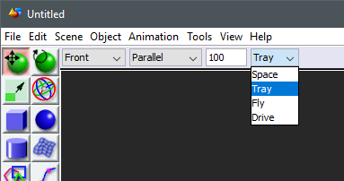
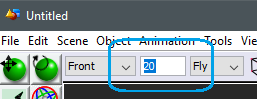
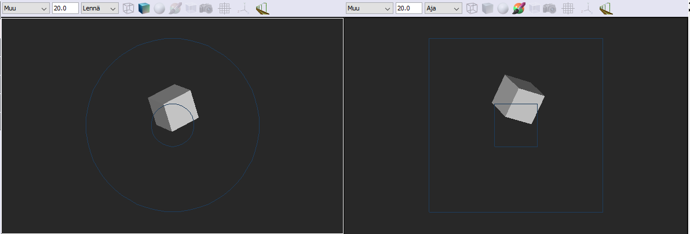

Navigation modes define, how the view responds to the mouse.
There are four modes, called 'Sphere', 'Tray', 'Drone' and 'Dolly'. Tray and Sphere are suitable for ediitng the scene and individual objects. Drone and Dolly modes are suitable for exploring large models or for example designing and recording camera drives.
In edit modes the view always rotates around a point (the 'rotation center'), that is in the model sphere on the center axis of the view. The rotation center also defines the working depth of the view. Zoom will bring you closer to the rotation center allowing you work on small details. Use Middle button-click to focus to a point.
Sphere: This allows free rotation to all directions. Sphere is the default mode for mesh editors.Tray: Y-axis is locked up (tilting to either side is not possible in tray-mode) and rolling forward and back are limited to [-90°, +90°]. In essense the behavior is as if you had your scene set on a tray. Tray mode is the default for scene views.
The idea of travel modes is, that instead of looking at the model on the outside, you place yourself into the model space. In these modes rotate becomes pan and zoom becomes move forward/back. These modes probably require some practice to be truely useful but they may come in handy in appropriate use cases. The travel modes make better sense with relatively wide camera angles and crowded scenes. Set the window to one view mode (Ctrl+B) or camera angle to 45° or higher. The modes are designed to be used mostly by the scroll wheel, though other controls work as well.
Note that using center-button click sets the working distance of the view, which directly affects the scroll step size and hence the speed of movement. You can also set the working depth by typing into the magnification field.
When either of the travel modes is activated, cue graphics are drawn onto the view. The cues are meant to help with the aim, when using the scroll wheel. You can find cue graphics settings in the Preferences.
Drone: Equivalent to Space. Allows you to fly in the model space into any direction. The positon of the mouse cursor affects the scroll function like this:
Dolly: Equivalent to Tray. Allows you to travel along the x-z-plane with y-direction always up.